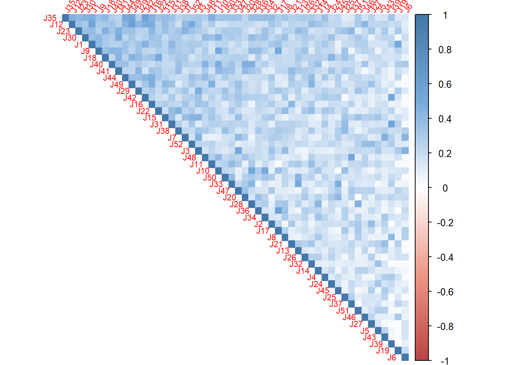
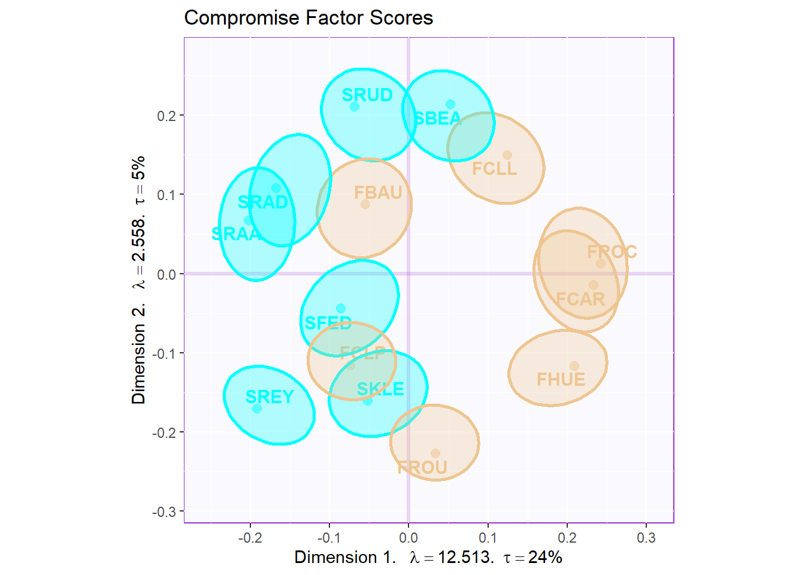
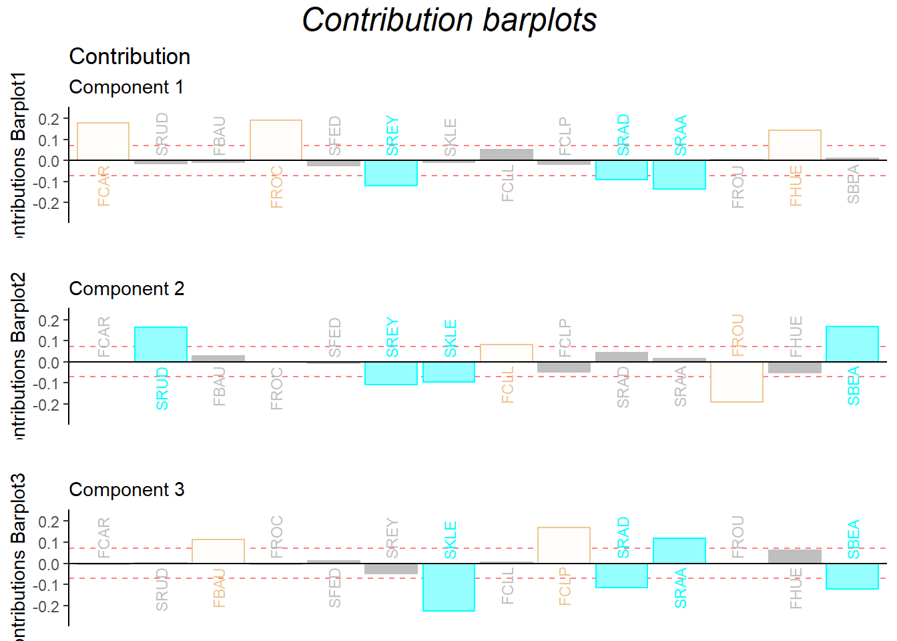

Chapter 10 DiSTATIS
10.1 Introduction of DiSTATIS
DiSTATIS is a statistical method designed for analyzing multiple data table for qualitative data from multidimensional scaling. DiSTATIS is capable for analyzing multiple sub data tables. It is different from MCA because MCA is only processing one data table with different nominal variables. However, DiSTATIS is processing multiple data tables at the same time. An much easier way to distinguish them is that DiSTATIS is corresponding to MFA for nominal data. Since it is a distance analysis method, the core concept is to know the similarity in the data pattern.
In this chapter, I am using a different data set called wines data set to conduct DiSTATIS. Please see more detailed info at data intro part3.3
10.2 Computation
Since DiSTATIS cares about the distance, I need to create a distance cube for the analysis here, which is different than usual analysis.
# table.wines, table.wines.names, table.wines.flavors
# have the design
place.design <- as.matrix(table.wines$X)
rownames(place.design) <- table.wines$X
for(i in 1:nrow(place.design)){
place.design[i,] <- str_sub(rownames(place.design)[i], 1, 1)
}
rownames(table.wines) <- table.wines$X
table.wines.data <- table.wines[-1]
rownames(table.wines.flavors) <- table.wines.flavors$X
table.wines.flavors.data <- table.wines.flavors[-1]
colnames(table.wines.flavors.data) <- table.wines.names[,2]
place.design.col <- place.design
place.design.col[which(place.design.col == "F")] <- index[1]
place.design.col[which(place.design.col == "S")] <- index[2]
# creating distance cube
DistanceCube <- DistanceFromSort(table.wines.data)
# run distance cube
res.Distatis <- distatis(DistanceCube)
# get the factors from the Cmat analysis
G <- res.Distatis$res4Cmat$G
C <- res.Distatis$res4Cmat$C
eigs <- res.Distatis$res4Cmat$eigValues
tau <- res.Distatis$res4Cmat$tau
cj <- res.Distatis$res4Splus$ctr
eigs.compromise <- res.Distatis$res4Splus$eigValues
# get partial factor array
BootF <- BootFactorScores(res.Distatis$res4Splus$PartialF)[1] Bootstrap On Factor Scores. Iterations #:
[2] 1000 10.3 HeatMap
I used C, the correlation matrix from the analysis to plot the heatmap. By using the ‘first principal component’, I am able to know what’s the inner pattern in these judges and make clustering based on their response.
# plot color
col <-colorRampPalette(c("#BB4444",
"#EE9988",
"#FFFFFF",
"#77AADD",
"#4477AA"))
# plot
corr4MCA.r <- corrplot::corrplot(
C,
method="color",
col=col(200),
type="upper",
#addCoef.col = "black",# Add coefficient of correlation
tl.cex = .7,
tl.srt = 60,#Text label color and rotation
order = "FPC",
#number.cex = 0.5,
diag = TRUE # needed to have the color of variables correct
)
10.4 Scree Plot
I have tow scree plots here: 1 is for the global one (all judges), one is for the compromise data (wines).
10.5 Global Factor Scores
Since I don’t have any pre-group before, based on the factor scores, I used kmeans to manually cluster 4 groups for labels. From the global factor scores, it serves well.
# cluster analysis
colnames(G) <- paste0("Dimension ", 1:ncol(G))
fit <- kmeans(G[,1:5],4)
Judge.design <- as.matrix(fit$cluster)
Judge.design[which(Judge.design == 1)] <- "Design1"
Judge.design[which(Judge.design == 2)] <- "Design2"
Judge.design[which(Judge.design == 3)] <- "Design3"
Judge.design[which(Judge.design == 4)] <- "Design4"
colnames(Judge.design) <- "group"
J.D <- as.matrix(Judge.design)
# get some color
nominal.Judges <- makeNominalData(as.data.frame(J.D))
color4Judges.list <- prettyGraphs::createColorVectorsByDesign(nominal.Judges)
plot.fs(as.factor(J.D), G[,1:5],
eigs, tau, method = "DiSTATIS")
10.6 Partial Factor Scores
The first partial factor scores is to compute a partial fi array.
# create the groups of Judges
code4Groups <- unique(J.D)
nK <- length(code4Groups)
# initialize F_K and alpha_k
F_k <- array(0, dim = c(dim(pf.j)[[1]],
dim(pf.j)[[2]],nK))
dimnames(F_k) <- list(dimnames(pf.j)[[1]],
dimnames(pf.j)[[2]], code4Groups)
alpha_k <- rep(0, nK)
names(alpha_k) <- code4Groups
Fa_j <- pf.j
# A horrible loop
for (j in 1:dim(pf.j)[[3]]){ Fa_j[,,j] <- pf.j[,,j] * alpha[j]}
# Another horrible loop
for (k in 1:nK){
lindex <- J.D == code4Groups[k]
alpha_k[k] <- sum(alpha[lindex])
F_k[,,k] <- (1/alpha_k[k])*apply(Fa_j[,,lindex],c(1,2),sum)
}From the partial factor scores plot, I can compare the 4 groups differently with their own judging response. It is interesting that design 2 group unstable evaluation on French wines and design 3 & 4 groups have huge inner discrepancy on South Africa’s wines.
# 5.2 a compromise plot
# To get graphs with axes 1 and 2:
h_axis = 1
v_axis = 2
# To get graphs with say 2 and 3
### base map
gg.compromise.graph.out <- createFactorMap(F,
axis1 = h_axis,
axis2 = v_axis,
title = "Compromise Factor Scores",
col.points = place.design.col,
col.labels = place.design.col)
# labels
label4S <- createxyLabels.gen(x_axis= h_axis,
y_axis = v_axis,
lambda= eigs,
tau = tau,
axisName = "Dimension ")
#### a bootstrap confidence interval plot
gg.boot.graph.out.elli <- MakeCIEllipses(
data = BootF[,c(h_axis,v_axis),],
names.of.factors =
c(paste0('Factor ',h_axis),
paste0('Factor ',v_axis)),
col = place.design.col)
# Add ellipses to compromise graph
gg.map.elli <- gg.compromise.graph.out$zeMap +
gg.boot.graph.out.elli +
label4S #
gg.map.elli
### get the partial map
map4PFS <- createPartialFactorScoresMap(
factorScores = F,
partialFactorScores = F_k,
axis1 = 1, axis2 = 2,
colors4Items = as.vector(place.design.col),
colors4Blocks = unique(color4Judges.list$oc),
names4Partial = dimnames(F_k)[[3]],
font.labels = 'bold')
d1.partialFS.map.byProducts <- gg.compromise.graph.out$zeMap +
map4PFS$mapColByItems +
label4S
d2.partialFS.map.byCategories <- gg.compromise.graph.out$zeMap +
map4PFS$mapColByBlocks +
label4S
d2.partialFS.map.byCategories10.7 Vocabulary graphs
By using Kmeans again, I tried to cluster all these flavor tag in the vocabulary data table. Right dot for the French and left dot for the South Africa, I found that French wines are described as more balanced and typical flavors; However, South Africa is considered as rich and strong taste, even sometimes it is not a good thing. Some other vocabulares, spicy, fish, aggressive are clustered to anther group. Since there are still some strong flavors, they are more closer to the South Africa wines.
# 5.5. Vocabulary
# 5.5.2 CA-like Barycentric (same Inertia as products)
F4Voc <- DistatisR::projectVoc(table.wines.flavors.data, F)
set.seed(44)
Voc.clusters <- kmeans(F4Voc$Fvoca.bary, 3)
Voc.color <- Voc.clusters$cluster
Voc.color[which(Voc.color == 1)] <- prettyGraphsColorSelection(starting.color = sample(1:170,1))
Voc.color[which(Voc.color == 2)] <- prettyGraphsColorSelection(starting.color = sample(1:170,1))
Voc.color[which(Voc.color == 3)] <- prettyGraphsColorSelection(starting.color = sample(1:170,1))
gg.voc.bary <- createFactorMap(F4Voc$Fvoca.bary,
title = 'Vocabulary',
col.points = Voc.color,
col.labels = Voc.color,
display.points = FALSE,
constraints = gg.compromise.graph.out$constraints)
#
gg.voc.bary.gr <- gg.voc.bary$zeMap + label4S
#print(e1.gg.voc.bary.gr)
gg.voc.bary.dots.gr <- gg.compromise.graph.out$zeMap_background +
gg.compromise.graph.out$zeMap_dots +
#gg.compromise.graph.out$zeMap_text +
gg.voc.bary$zeMap_text + label4S
gg.voc.bary.dots.gr10.8 Contribution Barplots
The dimension 1 can perfectly distinguish the two wines from French and South Africa. There are also some ambiguous ones such as SRAA, FROU hard to distinguish from the data.
signed.ctrJ <- cj * sign(F)
laDim = 1
ctrJ.1 <- PrettyBarPlot2(signed.ctrJ[,laDim],
threshold = 1 / NROW(signed.ctrJ),
font.size = 3,
signifOnly = FALSE,
horizontal = TRUE,
color4bar = place.design.col,
main = 'Variable Contributions (Signed)',
ylab = paste0('Contributions Barplot',laDim),
ylim = c(1.2*min(signed.ctrJ), 1.2*max(signed.ctrJ))
) + ggtitle("Contribution",subtitle = paste0('Component ', laDim))
### plot contributions for component 2
laDim =2
ctrJ.2 <- PrettyBarPlot2(signed.ctrJ[,laDim],
threshold = 1 / NROW(signed.ctrJ),
font.size = 3,
color4bar = place.design.col,
signifOnly = FALSE,
horizontal = TRUE,
main = 'Variable Contributions (Signed)',
ylab = paste0('Contributions Barplot', laDim),
ylim = c(1.2*min(signed.ctrJ), 1.2*max(signed.ctrJ))
)+ ggtitle("",subtitle = paste0('Component ', laDim))
laDim =3
ctrJ.3 <- PrettyBarPlot2(signed.ctrJ[,laDim],
threshold = 1 / NROW(signed.ctrJ),
font.size = 3,
color4bar = place.design.col,
signifOnly = FALSE,
horizontal = TRUE,
main = 'Variable Contributions (Signed)',
ylab = paste0('Contributions Barplot', laDim),
ylim = c(1.2*min(signed.ctrJ), 1.2*max(signed.ctrJ))
)+ ggtitle("",subtitle = paste0('Component ', laDim))
gridExtra::grid.arrange(as.grob(ctrJ.1),
as.grob(ctrJ.2),
as.grob(ctrJ.3),
ncol=1,
top = textGrob("Contribution barplots",gp=gpar(fontsize=18,font=3)))